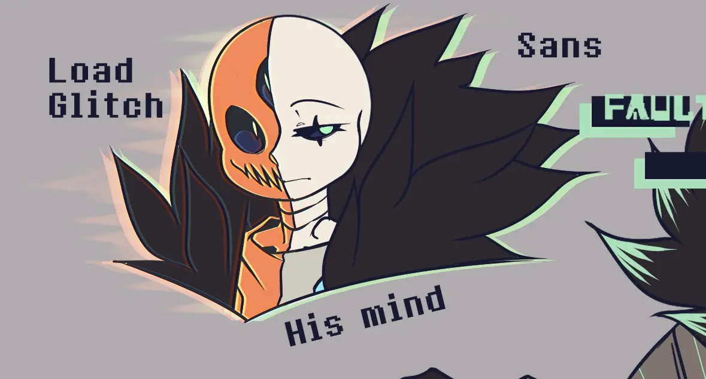
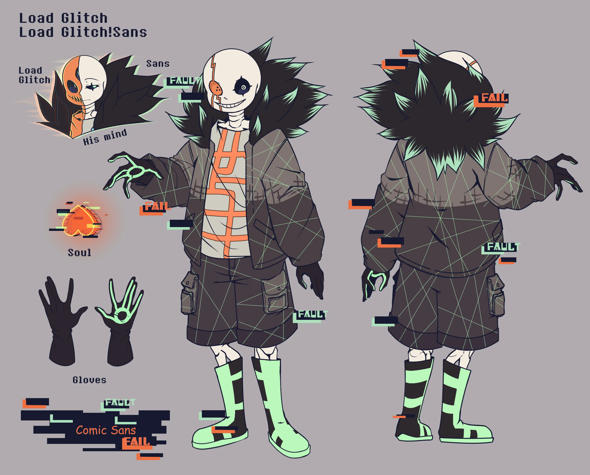
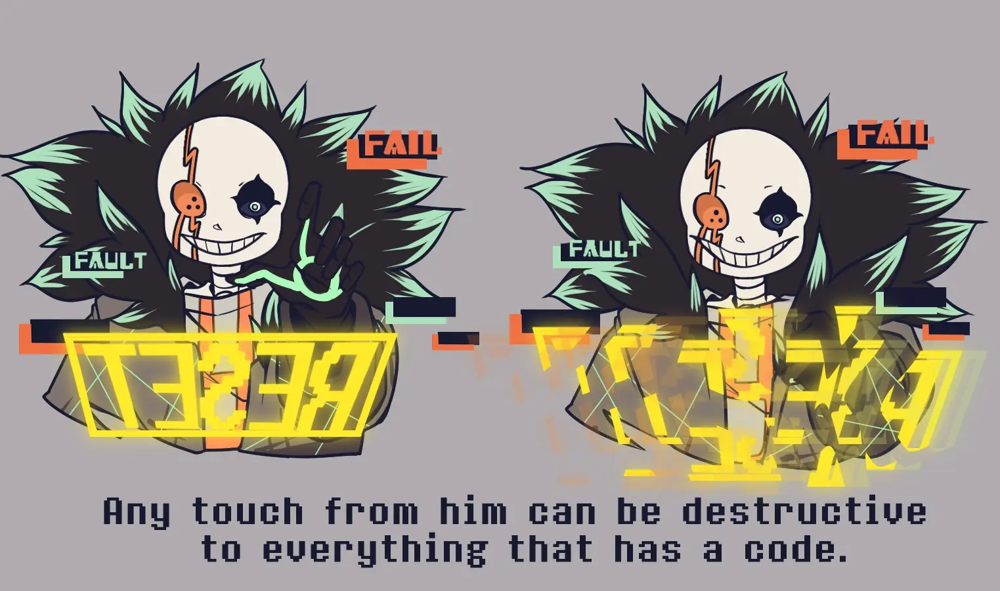
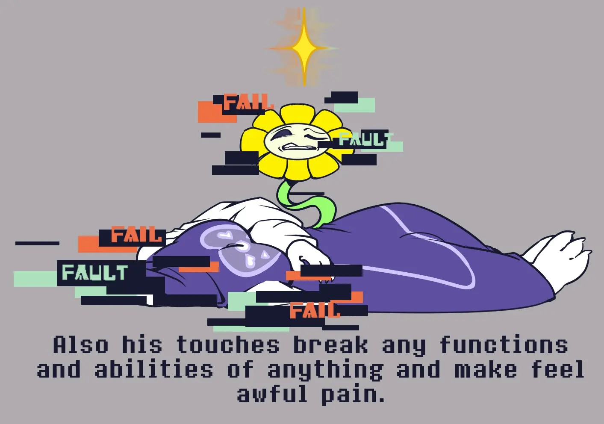
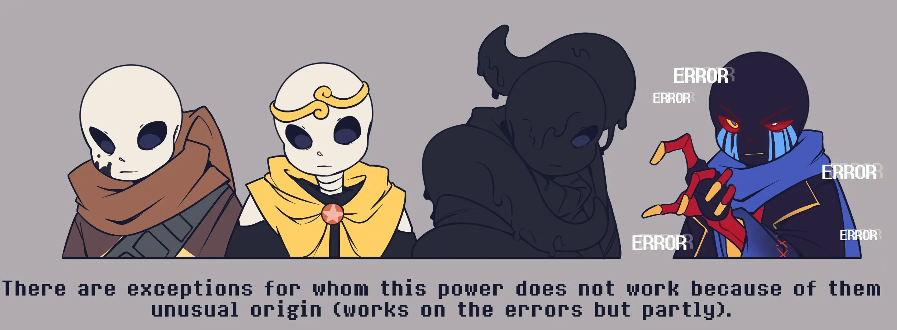
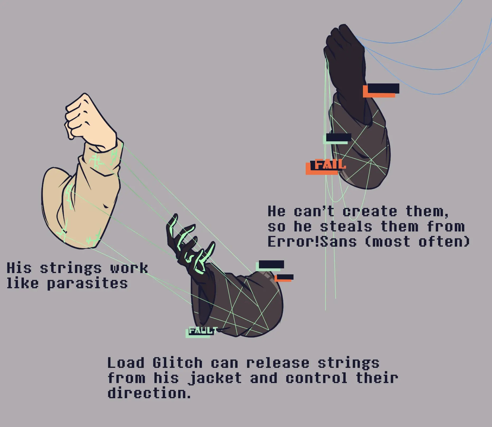
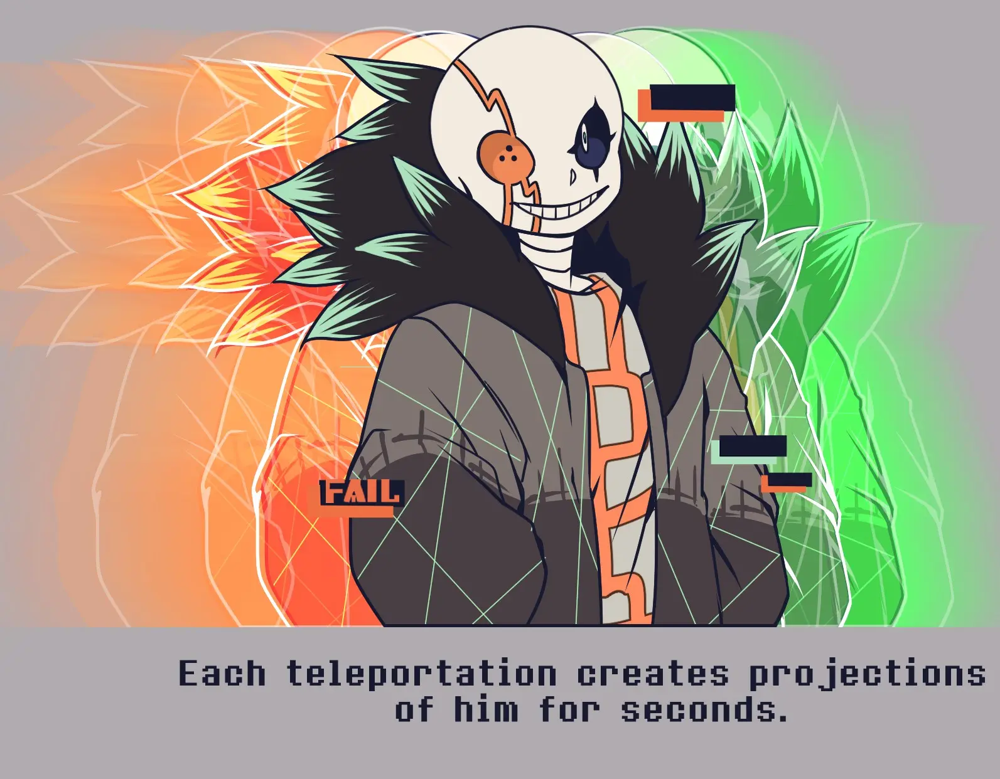
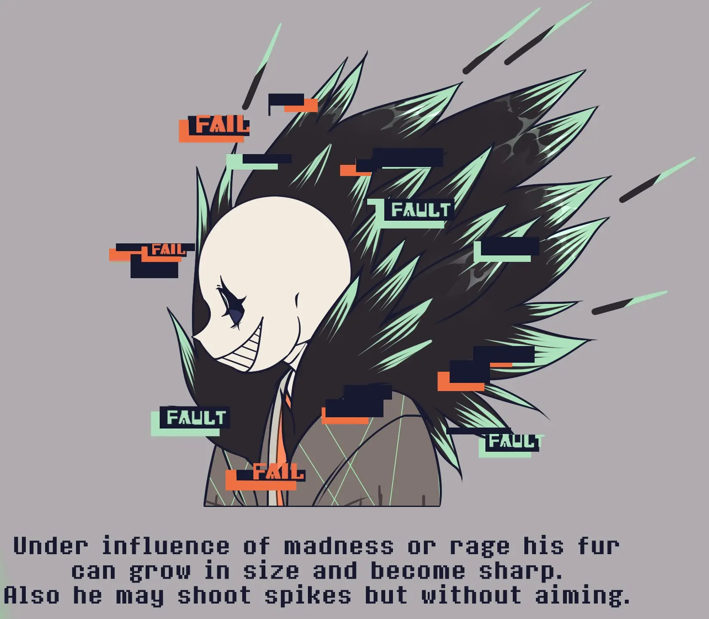
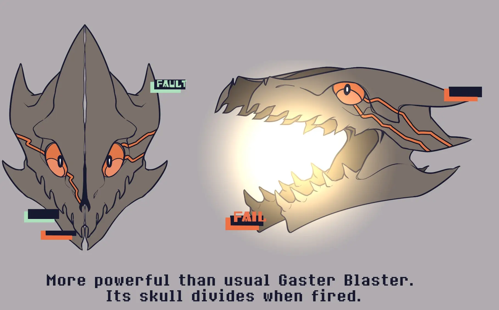

Лоуд Глитч — монстр, или скорее теперь глюк, который не должен был выжить. Он был ошибкой создателя, которую тот хотел
забыть и стереть. Но вместо этого породил на свет чудовище, которое никогда никого не простит. Он будет стремиться
прибрать к своим рукам абсолютно всё, что существует. И не важно, было оно твое или нет, он это заберет и сделает своим.
Предыстория
Это был обычный Санс из еще одной альтернативной вселенной, что в своей концепции и идее не сильно уходила от Underswap,
Storyshift и им подобным. В этой вселенной не было абсолютно ничего нового и отличительного в сравнении с другими вселенными,
но даже так, ее жители были вполне счастливы и не волновались о своей уникальности в сравнении с другими вселенными, живя,
как и другие.
Но автор так не думал. Он считал свою вселенную лишь нелепой идеей, для которой не дал достойного и качественного развития,
что смогла бы ее как-то выделить на фоне других. Он понимал, что ему пора создать что-то по-настоящему новое и достойное,
а старое похоронить и забыть.
Так, в один из дней в подземелье вся привычная жизнь была разрушена. Весь мир рвался по швам, а его жители исчезали,
превращаясь даже не в пыль, а куски кода. Санс видел всё это и был в полнейшем ужасе. Он пытался помочь, но это было бесполезно.
Когда же он нашел своего брата, тот оттолкнул его, пытаясь спасти его жизнь. Папирус прямо на глазах Санса исчезал, становясь ничем,
а Санс, по счастливой случайности, провалился сквозь собственный мир и избежал страшной участи. Его самого
перенесло в абсолютно чужой мир, о котором тот ничего не знал, пока его тело билось в агонии от боли, что он испытывал.
Будто он ломался изнутри и не мог прервать этот процесс.
На свое счастье, а может и несчастье, Санс остался жив. Да и не просто жив. Он был в Сноудине! Казалось, словно все произошедшее
было лишь сном, но разрывающая изнутри боль напомнила, что он не спал и все было по-настоящему. Его тело начали охватывать странные глюки,
которые вели себя, словно паразиты. Сансу нужна была помощь и не далеко от своего привычного поста он заметил кого-то. Осторожно подойдя ближе,
он окликнул его и увидел невозможное. Перед ним был он сам, другой Санс. В другой одежде, более уставший, но это был точно он. Это Санс был
не так дружелюбен, скорее даже напугался и проявил агрессию. Страдающий Санс пытался ему объяснить, чтобы тот помог ему, но тот не слушал и
у Санса не было выхода, кроме как бежать в Руины, к Ториэль.
Добежав до Руин, Санс понял, что путь к ним заблокирован и он со всей силы стучал в двери, крича о помощи и зовя Ториэль. Санс все еще не осознавал,
где находится и что происходит, но понимал, что это - не его дом. Он продолжал стучать и стучать, не переставая, но никто не пришёл.
Боль в его теле безостановочно росла, делая само существование невыносимым.
Он звал Ториэль, звал хоть кого-то,
но никто не пришёл. Когда сил уже почти не осталось, он сел, оперевшись о дверь, продолжая просить хоть кого-то ему помочь.
Но никто не пришёл.
Санс начал от терзающей все его тело боли терять сознание, и тут он услышал голос. Мерзкий, еле разборчивый и очень тяжелый.
Он чем-то напоминал его голос, но сильно искаженный. Будто голос был его аудиозаписью проигрывателя, который заело. Голос говорил, что готов помочь ему.
Готов избавить его от боли. Готов освободить его от страданий. Санс засомневался в намерениях обладателя этого голоса и, услышав речь Папируса вдалеке, очнулся,
считая, что его брат вернулся за ним. Открыв глаза, он осторожно встал, однако вместо своего брата, он увидел кого-то похожего на него. А рядом с ним был и тот,
другой Санс вместе с королевской стражей. Санс был напряжен, что те окружили его, но он не терял надежды разрешить недопонимание. Он медленно подошел к этому Папирусу, думая,
что, как и его брат, тот послушает и поможет ему. Но он ошибся.
В тот же миг, этот Папирус пробил его череп своим оружием, разломав ему правую часть лица с глазом. Ужас, шок, боль - всё смешалось воедино в нём.
Его надежда на спасение пошатнулась, а услышав насмешку из рта этого скелета, была полностью разбита. В этом мире не было спасения, не было надежды, не было
и шанса получить помощь. И тогда голос вернулся. Он говорил, что знал, что это случится и откровенно смеялся над Сансом.
Теперь Санс был согласен на его помощь, лишь бы прекратить боль и страдания от всего произошедшего. Однако голос сказал то, о чем Санс и подумать не мог:
— С каких пор мне нужно твоё разрешение?
Пока в Сноудине местные Папирус и Санс думали, что делать с телом этого неизвестного, он неожиданно встал и на его лице медленно
проявилась зловещая, маниакальная и леденящая дрожью улыбка. Не думая ни секунду, он напал на местного Санса и, схватив его за шею, моментально оторвал ему голову,
словно для него это было раз плюнуть. Папирус пытался моментально отреагировать атакой, но Санс мгновенно переместился к нему и пробил его грудную клетку насквозь, схватив в руки его душу.
Папирус с ужасом и непонимаем посмотрел на лицо того, кого только что убил, а новый Санс лишь с насмешкой улыбнулся и поблагодарил его за всё.
Следующим действием он уничтожил его душу и тело Папируса пало на снег не став пылью, что было не менее странно. С этого самого момента вселенная была обречена.
Прошел день и вся вселенная была опустошена. Теперь он был один во всем этом мире. Когда не осталось ни кого для уничтожения,
здравомыслие пробудилось в нём и ему пришло осознание, что весь этот мир - параллельная реальность, схожая с его прежним домом, но в то же время и отличающийся.
Его заинтересовало, могут ли существовать и другие миры, такие же или еще более причудливые. Но найти ответ на этот вопрос он не мог.
Он застрял здесь и всё, что ему оставалось делать, это ждать чего-то.
И он дождался. В его мир заскочил почти сразу еще один похожий на него Санс, однако тот был полностью черным и с щупальцами. Он был впечатлен масштабом разрушений.
Конечно же он также попал под горячую руку, но вот его убить не вышло. Найтмер схватил его за шею и сказал,
что может дать ему возможность покинуть это место и посетить другие миры, если тот будет служить ему.
Перспектива так себе, но осознавая, что перед ним у него нет преимуществ, он согласился стать (временно) его слугой.
В итоге ему удалось открыть для себя много нового: познакомиться с другими Сансами, посетить другие AU и узнать о мультивселенной, а также создателях.
Всё это сформировало у него четкое понимание того, что стало причиной кончины его мира и какова теперь была его цель. Но для ее исполнения ему необходимо было
стать независимым, а пока он телепортировался по AU с помощью Найтмера, сделать это было невозможно. Благо он знал, кто ему может помочь.
В один из дней, когда они пересеклись с Эррором, он обманул банду скелетов Найтмера и напал Эррора. Как Эррор, так и Найтмер не ожидали подобного.
Он обездвижил Эррора и стал пытаться считать из его разум всю информацию, что только можно было, пока Найтмер приказывал ему остановиться.
Поняв, что это бесполезно, щупальце откинуло его от Эррора, позволив последнему прийти в себя и возмутиться произошедшим. Но теперь это было неважно.
Он получил желаемое и залился самым безумным смехом, который у него когда-либо был. Теперь его ничего не сковывало. Он был свободен и мог делать, что захочет.
Не медля ни секунды, он телепортировался в неизвестном направлении. После такого Найтмер не смог сдержать свою гнев и ярость. Теперь у мультивселенной появилась новая, большая опасность.
Опасность, которая грозила поработить всю мультивселенную и стать ее хозяином. И имя ей стало Лоуд Глитч, поработитель вселенных.
Характер

Стоит понимать, что Лоуд Глитч и Санс это обособленные личности. Лоуд Глитч ныне является основным владельцем тела и дела все, что ему заблагорассудится, пока Санс пребывает в заточении, в подсознании.
Сейчас пробудить Санса практически невозможно, так как давно сдался.
Сам Лоуд Глитч самолюбивый нарцисс, который никогда не посмеет себя поставить ниже других.
Если он чего хочет, он будет это получать, независимо от сложности и жестокости метода. Он крайне импульсивный и если кто-то будет его длительное время раздражать или просто недооценивать,
Лоуд может этого кого-то убить. Правда это иногда играет и против него самого, так как Лоуд Глитч скуден в оценивании ситуаций и действует иррационально. Такое поведение зачастую портит его собственные планы.
Его единственная импровизация, если ничего не выходит - разрушать все напролом.
Хоть Лоуд до ужаса эгоистичен, он способен прислушиваться, но лишь к тем, кто абсолютно точно проявляют к нему лояльность и безоговорочно подчиняется, как к примеру
Manictale!Санс и Insanity!Санс (вместе они образуют Funny Terrible Trio). Но он никогда не назовет кого-то своим другом или соратником. Максимально, что возможно от него услышать: слуга или партнер.
Среди страхов, Лоуд обладает лишь страхов смерти, так как именно смерть способна заставить его исчезнуть, однако невероятная живучесть сильно притупила в нем это чувство и
только один раз кое-кто смог в нем пробудить инстинкт самосохранения.
Внешность

Стиль Лоуд Глитча довольно яркий. На его лице правый глаз имеет 4 мелких шрама, а сам глаз белый с зеленым зрачком. Левый же глаз имеет протянутые от него по
всей голове оранжевые линии, вся глазница оранжевая, а у глаза одновременно 3 черных зрачка. Его же душа оранжевая, но нестабильна и покрыта черно-зелеными глюками.
Носит серую футболку с оранжевыми кривыми под прямым углом линиями, черные перчатки с зеленой обводкой на ладонях,
коричневую куртку с тонкими зелеными линиями и черным мехом, чьи кончики покрашены в зеленый. Того же коричневого цвета его шорты с дополнительными карманами.
На ногах черные сапоги с зеленым принтом и подошвой.
Способности
Разрушение кода


Самая могущественная и опасная сила в мультивселенной. Коснувшись чего угодно, Лоуд Глитч может начать повреждать код объекта до
такого состояния, что он может стать неработоспособен или даже будет уничтожен. При повреждении кода, любой будет испытывать колоссальную боль, словно тому ломают все кости изнутри.

Подобная сила может влиять, как на смерть монстра, не давая тому просто превратится в пыль, так и уничтожать даже "игровые" механики и функции.
Единственные, кто способны не получать урона от подобной силы, это существа с нетипичным происхождением, вроде Инка, Дрима или Найтмера.
Ошибки же, вроде Эррора, могут ощутить на себе воздействие, но не полностью так как сам код ошибок уже изначально сломан.
Нити

Эту силу он позаимствовал у Эррора после их "близкого контакта". Он может выпускать их из своей куртки и шорт, регулируя направление движения и метод их применения.
Среди них стандартный захват цели, как это делает Эррор и внедрение в код, при котором нити работают подобно пиявкам, впиваясь в код объектов. Их внедрение также
вызывает разрушение, но оно более продолжительное и, вследствие, более болезненное.
Сам Лоуд Глитч не способен создавать нити, а потому он часто их ворует из Анти-Пустоты, где обитает Эррор, поглощая их своей курткой.
Так, нити становятся частью дизайна самой куртки.
Нестабильная телепортация

В силу нестабильного кода, его телепортация отражает эту самую нестабильность. Во время телепортации из точки А в точку Б, появляются проекции Лоуда,
которые просто повторяют его движения перед и после телепортации за пару секунд.
Шипы

Лоуд Глитч утратил силу призывать костяные атаки, но вместо них, он способен создавать шипы из меха своей куртки и даже стрелять ими.
Мех может увеличиваться в объеме и становится крайне острым, если Лоуд Глитч находится в состоянии агрессии или безумия.
Искаженные Гастер Бластеры

Такие же Гастер Бластеры, но способные раскрывать не только пасть, но свой череп, разделяясь визуально на 4 части.
По мощности превосходят классические Гастер Бластеры раз в пять.
Дополнительная информация
- Лоуд Глитч имеет отчасти схожую с Фатал Эррором природу, однако его психика относительно стабильнее.
- Лоуд Глитч может умереть лишь если полностью стереть его существование и код. Пока жива маленькая частичка его, он сможет восстановиться, это лишь вопрос времени.
- Его способность разрушения кода работает в любой возможной вселенной, даже в тех, где существует только один таймлайн или не применяется сила
сброса (Mafiafell, Revolutiontale и др.). Помимо вселенных, она работает и на внекодовых персонажах и ошибках.
- Лоуд Глитч не может создавать порталы.
- Раньше он носил подаренный братом шарф, но когда стал Лоуд Глитчем, порвал его.
- Помимо Funny Terible Trio, Лоуд неофициально состоит в RGB Трио, включающее Эррора и Фатал Эррора.
- С Лоудом Глитчем есть неофициальная игра являющаяся комнатой босс-файта в Roblox.